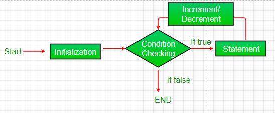
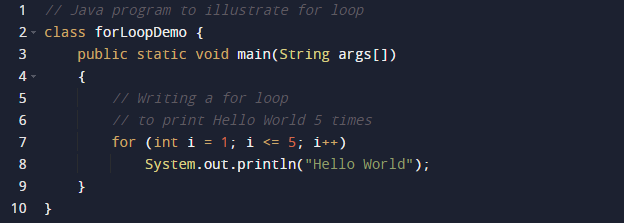

Java for loop provides a concise way of writing the loop structure. The for statement consumes the initialization, condition and increment/decrement in one line thereby providing a shorter, easy to debug structure of looping.

Syntax:
for (initialization expr; test expr; update exp)
{
// body of the loop
// statements we want to execute
}
The various parts of the For loop are:
1. Initialization Expression: In this expression, we have to initialize the loop counter to some value.
Example: int i = 1;
2. Test Expression: In this expression, we have to test the condition. If the condition evaluates to true then, we will execute the body of the loop and go to update expression. Otherwise, we will exit from the for loop.
Example: i <= 10
3. Update Expression: After executing the loop body, this expression increments/decrements the loop variable by some value.
Example: i++;
How does a For loop execute
1. Control falls into the for loop. Initialization is done
2. The flow jumps to Condition
3. Condition is tested.
1. If Condition yields true, the flow goes into the Body
2. If Condition yields false, the flow goes outside the loop
4. The statements inside the body of the loop get executed.
5. The flow goes to the Updation
6. Updation takes place and the flow goes to Step 3 again
7. The for loop has ended and the flow has gone outside.
For Loop Flowchart

Example

Output
Hello World
Hello World
Hello World
Hello World
Hello World
Dry-Running Example 1